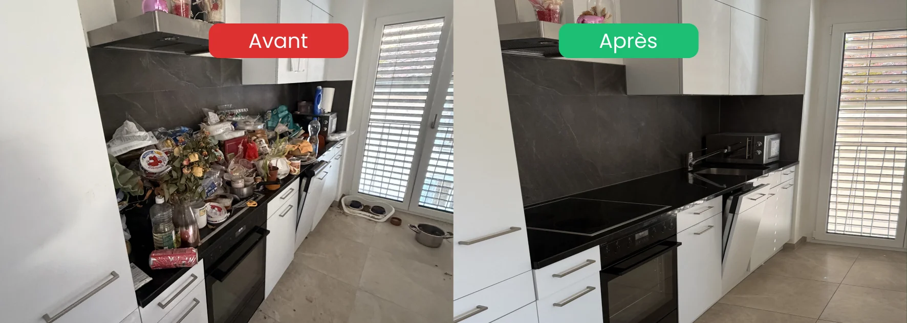

- Vous n'êtes pas seul : ce scénario est plus fréquent qu'on ne le croit
- Ce n'est pas votre faute : la personne concernée masque souvent volontairement la situation
- Première étape : ne pas paniquer, ne pas tout jeter, prendre du recul
- Le tri se fait à deux : ce qui se garde reste toujours à votre décision, pas la nôtre
- Discrétion totale : intervention possible sans marquage visible, dans le respect de votre proche
Une situation que nous rencontrons souvent
Voici le scénario typique que vivent de nombreuses familles en Suisse romande :
Une mère âgée vit seule chez elle. À chaque appel, à chaque visite à la porte, elle rassure : « Tout va bien, je gère, ne vous inquiétez pas, n'entrez pas, j'ai juste pas fait le ménage. » Les enfants, qui vivent à distance ou ont leur propre vie, font confiance et ne forcent pas la porte.
Puis un jour, c'est la chute. L'hospitalisation. L'urgence.
Les enfants adultes passent chercher des affaires : pyjama, papiers, médicaments. Et là, en ouvrant la porte, c'est le choc. L'appartement est dans un état qu'ils n'auraient jamais imaginé. Accumulation, négligence, parfois insalubrité avancée.
S'ensuit une vague d'émotions : stupeur, culpabilité, honte, colère, tristesse. « Comment elle a pu vivre comme ça ? Pourquoi on n'a pas vu ? Que va-t-on faire avant son retour ? »
Si vous vivez cela en ce moment, sachez une chose : ce n'est pas votre faute.
Pourquoi on n'a rien vu venir
Cette situation suit presque toujours le même schéma. Comprendre ce schéma libère d'une partie de la culpabilité.
Le déni de la personne concernée
Beaucoup de parents âgés masquent activement la situation à leurs enfants :
- Refus de recevoir des visites à domicile
- Excuses systématiques (« c'est en désordre », « je n'ai pas eu le temps »)
- Rendez-vous toujours fixés en dehors du logement (restaurant, parc)
- Volets fermés pour empêcher de voir de l'extérieur
Ce n'est pas par malveillance. C'est de la honte, parfois aussi un trouble (dépression, démence débutante, syndrome de Diogène partiel) qui empêche la personne de mesurer la situation.
L'éloignement géographique ou émotionnel
Les enfants adultes vivent souvent à distance, ont leurs propres familles, leurs propres charges. Faire confiance à un parent qui dit « tout va bien » est normal. Forcer une visite quand un proche dit « non » n'est ni évident ni respectueux.
La lente dégradation, invisible de loin
L'insalubrité s'installe sur des mois, parfois des années. Personne ne se réveille un matin dans un logement insalubre : c'est un glissement progressif. Vu de l'intérieur, la personne s'habitue ; vu de l'extérieur, on ne voit rien.
Les premières heures : ce qu'il faut faire (et ne pas faire)
Le choc passé, l'envie est souvent de « tout vider d'un coup ». C'est précisément ce qu'il ne faut pas faire.
Ce qu'il ne faut pas faire dans l'urgence
- ❌ Tout jeter sans tri : vous risquez de perdre des documents importants (papiers d'identité, contrats, testament, photos irremplaçables)
- ❌ Vider l'appartement avant le retour du parent sans son accord, surtout s'il est conscient
- ❌ Cacher la réalité aux autres frères et sœurs : décidez ensemble, pas seul
- ❌ Vous épuiser physiquement : nettoyer une journée entière dans ces conditions est risqué pour votre santé
- ❌ Vous lancer sans protection : poussière, moisissures, parfois animaux ou déchets posent des risques sanitaires réels
Ce qu'il faut faire dans les premières heures
- ✅ Prendre une photo générale de chaque pièce (utile pour discuter avec un pro à distance)
- ✅ Récupérer les essentiels : papiers, médicaments, vêtements pour l'hôpital, clés
- ✅ Refermer et sécuriser : pas besoin de tout faire le jour-même
- ✅ Prévenir la fratrie pour décider ensemble
- ✅ Contacter un professionnel pour évaluer la suite

Comment se passe un nettoyage professionnel d'appartement insalubre
Pour les familles qui n'ont jamais sollicité ce type de service, voici comment cela se déroule en pratique.
Étape 1 : le premier contact
Un appel ou un message suffit. Nous écoutons votre situation, posons quelques questions et fixons une visite ou demandons quelques photos. Pas de jugement, pas de questions intrusives.
Étape 2 : l'évaluation discrète
Visite des lieux avec discrétion (véhicules sans marquage visible si vous le souhaitez). Nous évaluons :
- Le volume à traiter
- Les zones critiques (cuisine, salle de bain, sols)
- Les risques sanitaires éventuels
- La présence d'objets à conserver impérativement
Étape 3 : le devis personnalisé
Devis écrit, prix fixe, prestations détaillées. Vous décidez du périmètre : tout, ou seulement certaines pièces avant le retour du parent.
Étape 4 : le tri, toujours en accord avec la famille
C'est un point essentiel de notre méthode : le tri final est toujours à la charge du client. Nous ne décidons jamais seuls de ce qui se jette ou se garde. Vous (ou un membre désigné de la famille) êtes présent ou validez à distance via photos pour les objets sensibles.
Cette règle protège deux choses :
- Les objets de valeur sentimentale que nous pourrions ne pas identifier
- Les documents importants (papiers, testaments, contrats) qui se cachent parfois dans des piles improbables
Étape 5 : le débarras
Évacuation des encombrants, déchets, mobilier hors d'usage. Tri vers les filières adaptées (recyclage, dons quand c'est possible, déchetterie en dernier recours).
Étape 6 : le nettoyage et la désinfection
Nettoyage en profondeur de toutes les surfaces, désinfection complète des zones sensibles (cuisine, salle de bain, WC, poignées). Le logement retrouve un état habitable.
Étape 7 : la remise en état finale
Aération, vérification de chaque pièce, photos avant/après. Vous recevez un logement prêt à accueillir votre proche dans des conditions dignes.
Un appartement insalubre à remettre en état, en toute discrétion
Tri en accord avec la famille · Sans jugement · Intervention en quelques jours
Voir le service insalubre & extrême →Combien de temps prend un nettoyage d'appartement insalubre
Difficile de donner un chiffre universel : tout dépend du volume et de l'état. Voici toutefois des ordres de grandeur.
| Type d'appartement | Niveau d'insalubrité | Durée approximative |
|---|---|---|
| Studio (1.5 pièces) | Encombrement modéré | 1 jour |
| Appartement 2.5-3.5 pièces | Encombrement standard | 2 à 3 jours |
| Appartement 4.5 pièces et + | Insalubrité avancée | 3 à 5 jours |
| Maison individuelle | Cas extrême | 1 semaine ou plus |
Ces durées incluent le tri, le débarras et le nettoyage. Le tri étant souvent l'étape la plus longue (et émotionnellement la plus chargée), nous l'adaptons à votre rythme.
Préparer le retour de votre proche
Si votre parent doit revenir chez lui après l'hospitalisation, plusieurs questions se posent. Ce sont des décisions médicales et familiales, mais voici quelques pistes.
Évaluer la pertinence du retour à domicile
Un retour dans le même logement, dans les mêmes conditions, présente un risque de rechute rapide (réaccumulation, rechute médicale, isolement). Avant tout retour, échangez avec :
- Le médecin traitant ou l'équipe hospitalière
- Le CMS (Centre médico-social) qui peut évaluer la situation
- Un psychologue ou psychogériatre si une dimension psychologique est en jeu
Préparer un environnement digne
Si le retour est validé médicalement :
- Nettoyer avant son arrivée, jamais après
- Garder ses objets familiers (fauteuil, photos, vaisselle préférée)
- Prévoir une aide à domicile régulière pour éviter la dégradation
- Maintenir des visites fréquentes, courtes mais régulières
Si le retour n'est pas possible
Parfois, le retour au logement n'est pas envisageable médicalement. Le nettoyage prépare alors :
- Une vente ou une remise en location
- Une restitution à la régie
- Un déménagement vers un EMS ou un appartement plus adapté
La dimension émotionnelle : pour vous aussi
Vivre cela avec un parent est une épreuve. Voici quelques rappels importants.
- Vous avez le droit d'être en colère sans cesser d'aimer
- Vous avez le droit d'être épuisé sans cesser d'aider
- Vous avez le droit de déléguer le concret sans culpabiliser
- Vous n'êtes pas obligé de tout faire seul : la fratrie, les amis, les professionnels existent
- Le choc est normal : voir un parent dans cette situation bouleverse, c'est humain
FAQ – Nettoyage d'un appartement insalubre
Mon parent est hospitalisé et son appartement est insalubre, par où commencer ?
Commencez par récupérer l'essentiel (papiers, médicaments, vêtements pour l'hôpital) et fermez l'appartement. Prenez des photos générales. Ne tentez pas de tout nettoyer seul dans l'urgence. Contactez un professionnel pour évaluer la situation et prévenez votre fratrie pour décider ensemble des étapes suivantes.
Faut-il l'accord du parent hospitalisé pour nettoyer son appartement ?
Oui, dans la mesure du possible. Si la personne est consciente et capable de décision, son accord (même implicite) est important pour éviter un traumatisme psychologique au retour. Si elle n'est pas en capacité de décider, la famille proche prend la décision dans son intérêt, idéalement en concertation avec l'équipe médicale.
Comment expliquer à mon parent qu'on a fait nettoyer son appartement ?
Avec délicatesse, sans culpabilisation. Évitez les phrases comme « tu vivais dans un dépotoir ». Préférez « on a remis les choses en ordre pour que tu puisses revenir en sécurité ». L'objectif est de préserver sa dignité tout en préparant un retour viable. Un soutien psychologique peut accompagner cette conversation.
Mon parent est-il atteint du syndrome de Diogène ?
Seul un médecin peut le dire. Si vous observez plusieurs signes (accumulation, isolement, refus de visites, négligence d'hygiène), parlez-en à son médecin traitant. Pour mieux comprendre ce trouble, consultez notre guide Syndrome de Diogène d'un proche : comprendre, accompagner, agir.
Que devient ce qui est débarrassé d'un appartement insalubre ?
Tout ce qui peut être donné est donné (associations, recycleries). Ce qui peut être recyclé est trié vers les filières adaptées. Seul ce qui ne peut être ni donné ni recyclé part en déchetterie. Le tri final reste toujours à la charge du client, c'est-à-dire la famille : vous gardez ce qui compte pour vous, vous décidez ce qui part.
En résumé
Découvrir un appartement insalubre après l'hospitalisation d'un parent est un choc, mais ce n'est pas une fatalité. Ce n'est ni votre faute, ni un sujet honteux : c'est une situation que de nombreuses familles vivent. Les bons réflexes sont simples : ne pas paniquer, ne pas tout jeter dans l'urgence, contacter un professionnel formé à ces situations sensibles, et garder le tri final entre vos mains. L'objectif n'est pas seulement de nettoyer un logement, mais de préparer un retour digne, ou de fermer une page avec respect.
Ressources d'aide en Suisse
- 143 — La Main Tendue : écoute anonyme 24h/24, pour vous aussi
- Pro Senectute : soutien aux personnes âgées et à leur famille
- CMS (Centre médico-social en Vaud et Fribourg) : évaluation et aide à domicile
- Pro Mente Sana : information et soutien en santé mentale
- Votre médecin traitant : premier interlocuteur de confiance